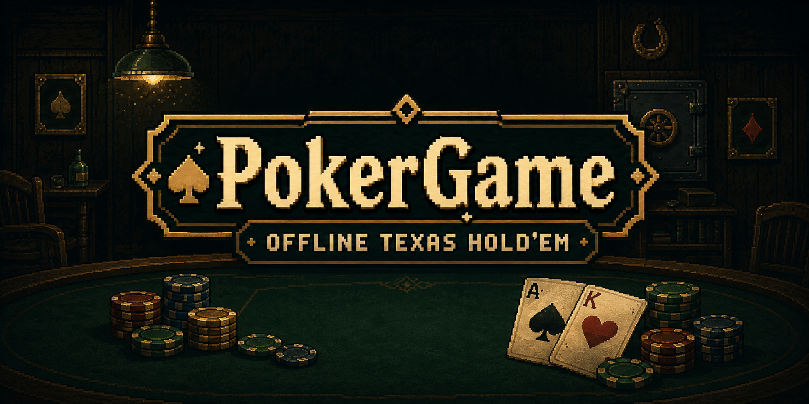
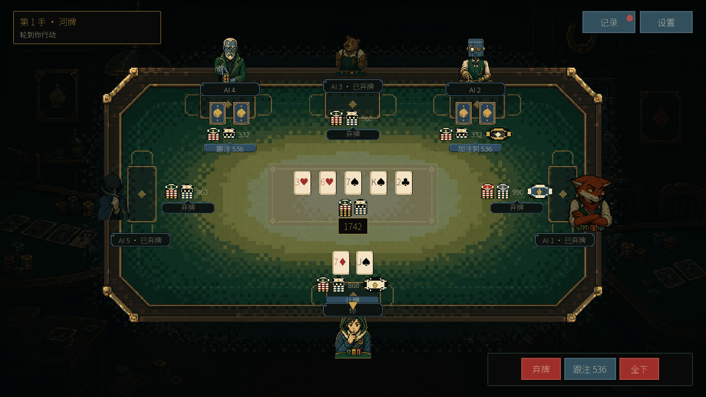
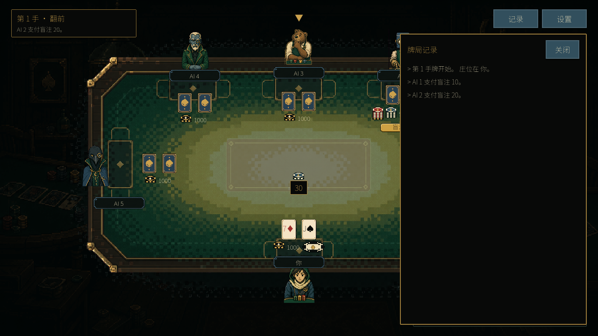
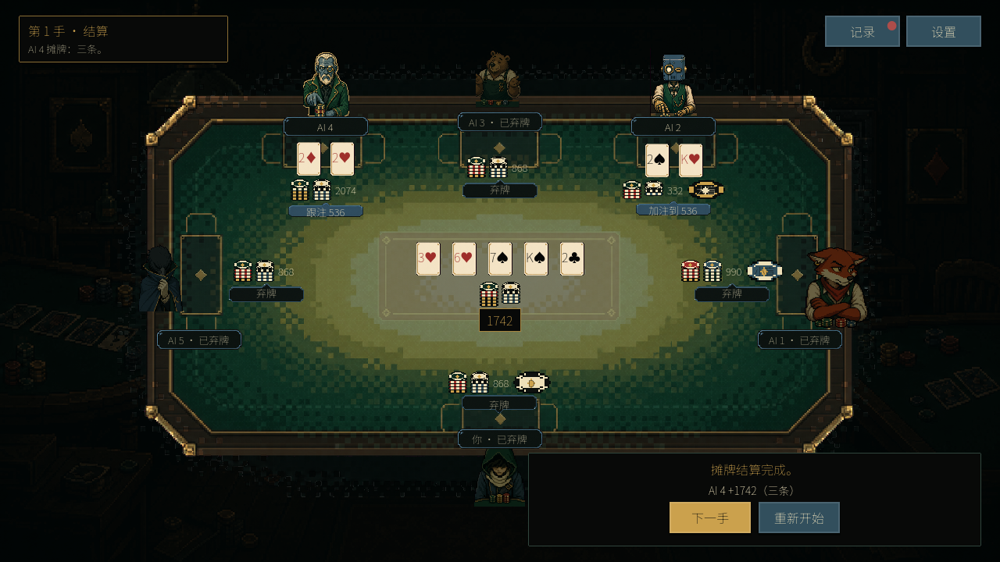

Your seat at the table is always open.
A free, offline Texas Hold’em game for Windows and macOS. Sit down with up to five AI opponents in a lamp-lit pixel-art poker room. Read the table, choose your moment, and play for the last chip.
Single player · 1–5 AI opponents · Three difficulty levels
Language: The game’s menus, action buttons, and help are currently in Simplified Chinese. An English in-game interface is not included.
Call the bet. Read the room.
Two cards in your hand. Five on the table. Fold, call, raise, or go all-in as each hand moves from the blinds to the showdown. All-ins, side pots, and split pots are handled for you.

Pick your opponents. Set your pace.
- Heads-up or a full table: choose one to five AI opponents and Easy, Medium, or Hard difficulty.
- Different betting personalities: on Hard, face cautious players, aggressive raisers, and opponents who like to call.
- Play for the whole table: start with 1,000 chips each and fixed 10/20 blinds. Win all the chips to finish the match.
- Take your time: choose normal or fast actions, pause when you need a break, and open the current hand’s action log.
- Keep it local: no game account, internet connection, real-money wagering, or background data collection. Settings and completed-hand statistics stay on your device.

One more hand?
See the cards turn over and the pot find its winner. Then take the next hand—or change the table and start again.

Before you take a seat
Windows x64 and macOS desktop downloads. Use a mouse and a display area of at least 1280 × 720. No Godot editor or .NET installation is needed. The macOS package includes Apple Silicon and Intel binaries; Intel Macs have not been separately validated.
First launch: Windows builds are unsigned; macOS builds are not Apple-notarized. Your system may show a security prompt. Read the download instructions and release notes.
Saving: settings and completed-hand statistics are saved locally. An unfinished match is not saved when you return to the menu or quit.
Button guide: 开始牌局 = Start game · 弃牌 = Fold · 让牌 = Check · 跟注 = Call · 加注到 = Raise to · 全下 = All-in · 下一手 = Next hand.
Feedback from your table
Found a confusing hand or a bug? Leave a comment below or report it on GitHub. Include your version, operating system, opponent count, difficulty, and what happened.
Source and more information · GitHub downloads and release notes
Made by Jerryszz02 with Godot. Game and promotional artwork include AI-generated images. Screenshots show actual gameplay; the title banner is promotional artwork. Credits and third-party notices.
Take a seat.
Free desktop downloads. Simplified Chinese interface.
Get it on itch.ioGitHub downloads